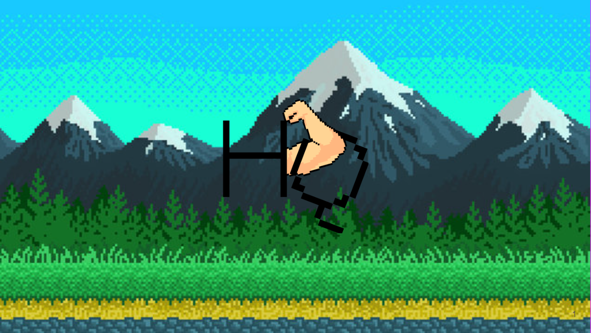

The Player attacks an enenmy once an exericse has been logged in the application. Defeating the enemy awards experience to level up
Health Quest 

What began as my computer science capstone project eventually became my largest and award-winning personal game project. Health Quest is a mobile RPG game where the user attacks monsters and levels up by performing and logging exercises in the application.
Technologies
My Role
Media
Screenshots
The menu that displays both a player's level / experience and also their weight lifting and run time progress over time.
The menu where the player can customize their character
Gameplay Videos
Kalhert Innovation Exploration Competition
In April of 2022 I prepared a pitch and entered the annual Innovation Exploration Competition hosted by the Kalhert Initiative. Health Quest's game design and core idea was successful enough to place in the top 5 winners of the competition. Learn more about the competition HERE
Code
The code responsible for calculating how much damage a player does to a monster based on the effectiveness of their most recent exercise. This C# code makes great use of LINQ methods and is a good show of unique and non-traditional gameplay engineering
/// <summary>
/// Helper method that calculates the damage to be done for a user's most recent exercise session
/// </summary>
/// <returns></returns>
private int CalculateDamage(DateTime lastCheckDate)
{
// Compare a user's most recently logged exercise session against their history to calculate
// damage based on performance within the last month
int damage = 0;
var exerciseString = queryInstance.GetLastMonth(userNum);
var allExercisesGrouped = JsonConvert.DeserializeObject<ExercisesByMuscleGroup>(exerciseString);
var allExercises = new List<ExerciseWithID>();
allExercises.AddRange(allExercisesGrouped.Abs);
allExercises.AddRange(allExercisesGrouped.Back);
allExercises.AddRange(allExercisesGrouped.Biceps);
allExercises.AddRange(allExercisesGrouped.Chest);
allExercises.AddRange(allExercisesGrouped.Legs);
allExercises.AddRange(allExercisesGrouped.Shoulders);
// 1: How many times has the user exercised within the last 7 days?
damage += WeeklyExerciseCountDamage(allExercises);
// 2: How much did the weight increase for repeat exercises?
// 3: How many new exercises did the user do?
damage += WeightIncreaseAndNewExerciseDamage(allExercises, lastCheckDate);
// 4: How many unique exercises did the user complete in their most recent session?
damage += UniqueExerciseDamage(allExercises, lastCheckDate);
// 5: How many muscle groups has the user worked in the last 10 days?
damage += MuscleGroupDamage(allExercisesGrouped);
return damage;
}
/// <summary>
/// Helper method to calculate the damage from the number of workouts a user has logged in the past week
/// </summary>
/// <param name="allExercises">All exercises the user has done in the past month</param>
/// <returns>The damage</returns>
private int WeeklyExerciseCountDamage(List<ExerciseWithID> allExercises)
{
var damage = 0;
var exerciseCount = allExercises
.GroupBy(ex => ex.Date)
.Where(date => DateTime.Parse(date.Key) >= DateTime.Now.AddDays(-7)).Count();
switch (exerciseCount)
{
case 1:
break;
case 2:
damage += 100;
break;
case 3:
damage += 300;
break;
case 4:
damage += 600;
break;
case 5:
damage += 650;
break;
case 6:
damage += 675;
break;
case 7:
damage += 700;
break;
case 8:
damage += 600;
break;
case 9:
damage += 400;
break;
case 10:
damage += 100;
break;
case 11:
damage += 50;
break;
default:
break;
}
return damage;
}
/// <summary>
/// Helper method to calculate the damage for the number of new exercises (within the last 2 weeks) that
/// a user has completed since the last update, and the damage calculated from increasing weight on exercises.
/// </summary>
/// <param name="allExercises">All exercises the user has done in the past month</param>
/// <param name="lastCheckDate">The last date that the user checked the venture forth page</param>
/// <returns></returns>
private int WeightIncreaseAndNewExerciseDamage(List<ExerciseWithID> allExercises, DateTime lastCheckDate)
{
var damage = 0;
var thisSessonExercises = allExercises
.Where(ex => DateTime.Parse(ex.Date) > lastCheckDate)
.GroupBy(ex => ex.ExID)
.ToList();
foreach (var exercise in thisSessonExercises)
{
// We first need to consolidate the total weight lifted for the case that a user logged the same exercise more
// than once in a single session (when using different sets, reps, or weights or a given exercise)
var totalWeight = 0;
var exId = exercise.First().ExID;
if (exercise.Key > 1)
{
foreach (var dupEx in exercise)
{
totalWeight += (dupEx.Sets * dupEx.Reps * dupEx.Weight);
}
}
else
{
totalWeight += (exercise.First().Sets * exercise.First().Reps * exercise.First().Weight);
}
// First check if the exercise has been done in the last two weeks (Not including the most recent session):
var previousExCount = allExercises
.Where(ex =>
ex.ExID == exId
&& (DateTime.Parse(ex.Date) < lastCheckDate)
&& (DateTime.Parse(ex.Date) >= DateTime.Now.AddDays(-14)))
.Count();
if (previousExCount == 0)
{
damage += 100;
}
else
{
// Get the most recent weight amount for this exercise
var previousEx = allExercises
.Where(ex => ex.ExID == exId && (DateTime.Parse(ex.Date) < lastCheckDate))
.GroupBy(ex => ex.Date)
.FirstOrDefault();
// Loop for the case that a user logged the same exercise more than once in a single session (when using different
// sets, reps, or weights or a given exercise)
var previousWeightLifted = 0;
foreach (var preEx in previousEx)
{
previousWeightLifted += (preEx.Reps * preEx.Sets * preEx.Weight);
}
var percentChange = (totalWeight - previousWeightLifted) / (double)previousWeightLifted;
if (percentChange > 0)
{
var tempDamage = 300 * Math.Pow(percentChange, 0.1);
if (tempDamage > 300)
{
tempDamage = 300;
}
damage += (int)tempDamage;
}
}
}
return damage;
}
/// <summary>
/// Helper method to calculate the damage for every unique exercise the user has performed
/// since their last check of the battle page
/// </summary>
/// <param name="allExercises">All exercises the user has done in the past month</param>
/// <param name="lastCheckDate">The last date that the user checked the venture forth page</param>
/// <returns></returns>
private int UniqueExerciseDamage(List<ExerciseWithID> allExercises, DateTime lastCheckDate)
{
var uniqueExerciseCount = allExercises
.Where(ex => DateTime.Parse(ex.Date) > lastCheckDate)
.GroupBy(ex => ex.ExID).Count();
var damage = 50 + (uniqueExerciseCount * 50);
if (damage > 450)
{
damage = 450;
}
return damage;
}
/// <summary>
/// Helper method to calculate the damage from the number of muscle groups a user has activated
/// in the last 10 days
/// </summary>
/// <param name="allExercisesGrouped">All exercises the user has done in the past month grouped by muscle groups</param>
/// <returns></returns>
private int MuscleGroupDamage(ExercisesByMuscleGroup allExercisesGrouped)
{
var muscleGroupCount = 0;
var AbCount = allExercisesGrouped.Abs.Where(ex => DateTime.Parse(ex.Date) >= DateTime.Now.AddDays(-10)).Count();
muscleGroupCount += (AbCount >= 1) ? 1 : 0;
var backCount = allExercisesGrouped.Back.Where(ex => DateTime.Parse(ex.Date) >= DateTime.Now.AddDays(-10)).Count();
muscleGroupCount += (backCount >= 1) ? 1 : 0;
var bicepsCount = allExercisesGrouped.Biceps.Where(ex => DateTime.Parse(ex.Date) >= DateTime.Now.AddDays(-10)).Count();
muscleGroupCount += (bicepsCount >= 1) ? 1 : 0;
var chestCount = allExercisesGrouped.Chest.Where(ex => DateTime.Parse(ex.Date) >= DateTime.Now.AddDays(-10)).Count();
muscleGroupCount += (chestCount >= 1) ? 1 : 0;
var legCount = allExercisesGrouped.Legs.Where(ex => DateTime.Parse(ex.Date) >= DateTime.Now.AddDays(-10)).Count();
muscleGroupCount += (legCount >= 1) ? 1 : 0;
var shouldersCount = allExercisesGrouped.Shoulders.Where(ex => DateTime.Parse(ex.Date) >= DateTime.Now.AddDays(-10)).Count();
muscleGroupCount += (shouldersCount >= 1) ? 1 : 0;
var tricepsCount = allExercisesGrouped.Triceps.Where(ex => DateTime.Parse(ex.Date) >= DateTime.Now.AddDays(-10)).Count();
muscleGroupCount += (tricepsCount >= 1) ? 1 : 0;
var damage = (muscleGroupCount * 150) - 150;
if (damage < 0)
{
damage = 0;
}
return damage;
}
The code responsible for syncing a multiplayer party's attack against a boss monster. This code pulls from our database, calculates player damage, and notifies all other party members of attack contributions since last opening the "Party Mode" page
userNumPath = Path.Combine(Application.persistentDataPath, "UserNum.json");
//Define required objects
StreamReader userSw = new StreamReader(userNumPath);
queryInstance = new ExerciseQuery();
//Obtain user's ID
userNum = int.Parse(userSw.ReadToEnd());
userName = queryInstance.GetName(userNum);
var partyIdResults = queryInstance.GetSelfPartyID(userNum).Split(':');
if(partyIdResults.Length > 1)
partyId = int.Parse(partyIdResults[1].Trim('}'));
//Party did not exist
if (partyId == 0)
return;
// Next, load in the enemy's health saved in database
var we = (queryInstance.GetPartyEnemy(partyId));
var enemyData = JsonConvert.DeserializeObject(queryInstance.GetPartyEnemy(partyId));
int enemyCurrentHealth;
//Check if user is in party
var inParty = queryInstance.GetSelfPartyID(userNum).Split('\n');
// Check for the user's current party and modify display to match
var party = JsonConvert.DeserializeObject(queryInstance.GetPartyUsers(userNum));
if (enemyData == null)
{
//Our enemy is null so we MUST create it
enemyCurrentHealth = 10000 * party.PartyMembers.Count;
//Set enemy health
queryInstance.SetPartyEnemy(partyId, 1, enemyCurrentHealth);
enemyData = JsonConvert.DeserializeObject(queryInstance.GetPartyEnemy(partyId));
}
var succeeded = Int32.TryParse(enemyData.EnemyHealth, out enemyCurrentHealth);
// If the enemy is being loaded for the first time, or it has reached 0 health, reset the health
if (!succeeded || enemyCurrentHealth <= 0)
{
enemyCurrentHealth = 10000 * party.PartyMembers.Count;
//Set enemy health
queryInstance.SetPartyEnemy(partyId, 1, enemyCurrentHealth);
}
int maxHealth = 10000 * party.PartyMembers.Count;
health.SetMaxHealth(maxHealth);
health.SetHealth(enemyCurrentHealth);
healthText.text = enemyCurrentHealth + "/" + maxHealth;
// Dynamically display and name party members
switch (party.PartyMembers.Count)
{
case 1:
user1.SetActive(true);
heroName1.text = party.PartyMembers[0];
break;
case 2:
user1.SetActive(true);
heroName1.text = party.PartyMembers[0];
user2.SetActive(true);
heroName2.text = party.PartyMembers[1];
break;
case 3:
user1.SetActive(true);
heroName1.text = party.PartyMembers[0];
user2.SetActive(true);
heroName2.text = party.PartyMembers[1];
user3.SetActive(true);
heroName3.text = party.PartyMembers[2];
break;
case 4:
user1.SetActive(true);
heroName1.text = party.PartyMembers[0];
user2.SetActive(true);
heroName2.text = party.PartyMembers[1];
user3.SetActive(true);
heroName3.text = party.PartyMembers[2];
user4.SetActive(true);
heroName4.text = party.PartyMembers[3];
break;
default:
break;
}
// First, check if the user should do an attack
// Compare locally stored date against most recent exercise date
partyModeLastCheck = Path.Combine(Application.persistentDataPath, "PartyModeLastCheck.json");
StreamWriter lastCheckinitSW = new StreamWriter(partyModeLastCheck, true);
lastCheckinitSW.Write(""); // Needed to ensure the json path is stored in the local temp storage
lastCheckinitSW.Close();
StreamReader lastCheckReader = new StreamReader(partyModeLastCheck);
var lastDateString = lastCheckReader.ReadToEnd();
lastCheckReader.Close();
if (lastDateString == "")
{
lastCheckinitSW = new StreamWriter(partyModeLastCheck, true);
lastCheckinitSW.Write(new DateTime(1, 1, 1));
lastCheckinitSW.Close();
}
lastCheckReader = new StreamReader(partyModeLastCheck);
lastDateString = lastCheckReader.ReadToEnd();
Debug.Log(lastDateString);
var lastDate = DateTime.Parse(lastDateString);
lastCheckReader.Close();
completedExercisepath = Path.Combine(Application.persistentDataPath, "LogExercise.json");
StreamReader completedExerciseReader = new StreamReader(completedExercisepath);
var locallyStoredExercies = completedExerciseReader.ReadToEnd();
AllStoredExercises exercises;
List exercisesToShow = new List();
// No exercises have been logged yet.
if (locallyStoredExercies != "")
{
locallyStoredExercies = "{\"StoredExercises\":[" + locallyStoredExercies.Substring(1) + "]}"; // Adding JSON
exercises = JsonConvert.DeserializeObject(locallyStoredExercies);
exercisesToShow = exercises.StoredExercises.Where(workout => workout.DateCompleted > lastDate).ToList();
completedExerciseReader.Close();
}
// Perform damage calculations and update database
if (exercisesToShow.Count > 0)
{
var damage = CalculateDamage(lastDate);
string queryLog = "";
isAttacking = true;
queryLog = userName + " completed a workout for " + damage + " damage!\n\n";
foreach (var workout in exercisesToShow)
{
foreach (var exercise in workout.Exercises)
{
queryLog += attackLog.text + userName + " completed " + exercise.Reps * exercise.Sets + " " + exercise.ExerciseName + "s at " + exercise.Weight + " pounds!\n\n";
}
}
totalDamage = damage;
healthText.text = (enemyCurrentHealth - damage) + "/" + maxHealth;
dmg.Add(damage);
// Send party damage log
queryInstance.DoPartyDamage(partyId, userNum, totalDamage, queryLog, DateTime.Now);
// If the boss is dead, send defeated enemy message to party
if((enemyCurrentHealth - damage) <= 0)
{
queryInstance.DoPartyDamage(partyId, userNum, 0, userName + " defeated the enemy!!!", DateTime.Now);
}
}
// Check for updates from party members and display
var partyActivitiesString = queryInstance.GetPartyDamageLog(partyId, lastDate);
List partyActivities = new List();
if (partyActivitiesString != "]")
partyActivities = JsonConvert.DeserializeObject>(partyActivitiesString);
if (partyActivities.Count > 0)
{
foreach (var activity in partyActivities)
{
int damage = int.Parse(activity.Damage);
attackLog.text = attackLog.text + activity.DamageString;
}
isAttacking = true;
// Remove the trailing newlines
attackLog.text = attackLog.text.TrimEnd('\n');
attackLog.text = attackLog.text.TrimEnd('\n');
var scroller = logContainer.GetComponent(typeof(ScrollRect)) as ScrollRect;
scroller.normalizedPosition = new Vector2(0, 1);
}
// Once all checks have been made for user attacks, update local storage date
// and the database enemy health
StreamWriter sw = new StreamWriter(partyModeLastCheck, false);
sw.WriteLine(DateTime.Now);
sw.Close();
Please email with requests for any additional code samples!
Try It Out